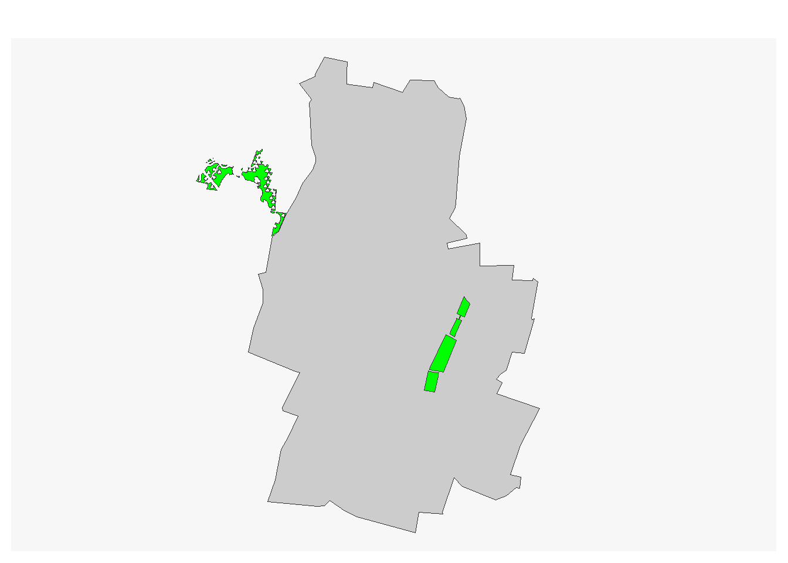
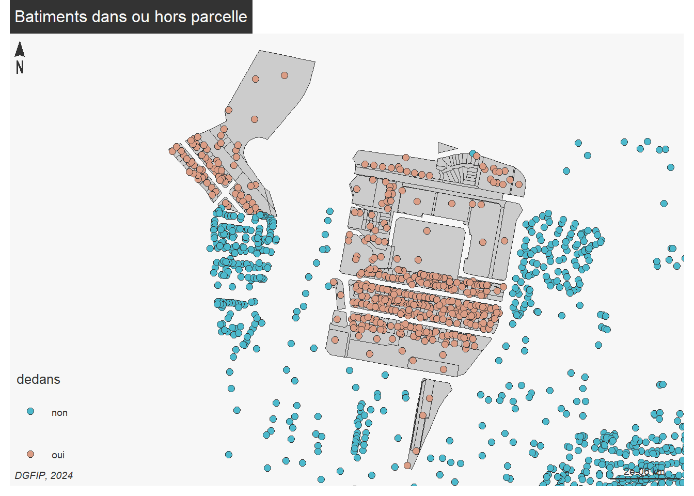
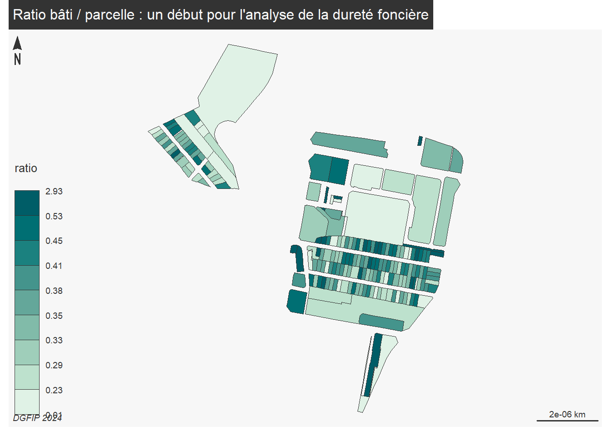

## Linking to GEOS 3.12.1, GDAL 3.8.4, PROJ 9.3.1; sf_use_s2() is TRUEExercice : introduire les commentaires de ce code
# lecture du fichier ign admin express et filtrage sur Bondy
ville <- st_read("data/gros/ADMIN-EXPRESS-COG_2-1__SHP__FRA_2020-11-20/ADMIN-EXPRESS-COG/1_DONNEES_LIVRAISON_2020-11-20/ADE-COG_2-1_SHP_WGS84G_FRA/COMMUNE.shp")## Reading layer `COMMUNE' from data source
## `C:\Users\tachasa\L6ECSIG\data\gros\ADMIN-EXPRESS-COG_2-1__SHP__FRA_2020-11-20\ADMIN-EXPRESS-COG\1_DONNEES_LIVRAISON_2020-11-20\ADE-COG_2-1_SHP_WGS84G_FRA\COMMUNE.shp'
## using driver `ESRI Shapefile'
## Simple feature collection with 34968 features and 12 fields
## Geometry type: MULTIPOLYGON
## Dimension: XY
## Bounding box: xmin: -61.80984 ymin: -21.38963 xmax: 55.83663 ymax: 51.08899
## Geodetic CRS: WGS 84bondy <- ville [ville$NOM_COM == 'Bondy',]
# on change de projection, on passe en lambert
bondy <- st_transform(bondy, 2154)
# Quelles sont les couches du fichier construction.gpkg ?
st_layers("data/construction.gpkg")## Driver: GPKG
## Available layers:
## layer_name geometry_type features fields crs_name
## 1 dptSel Multi Polygon 20 6 WGS 84
## 2 dpt Multi Polygon 101 6 WGS 84
## 3 villes 40 3 WGS 84
## 4 ville Multi Polygon 40 3 WGS 84# chargement des prescriptions linéaires du PLui et on cherche les libellés distincts
# il s'agit de repérer les items pouvant concerner la renaturation
prescriptionLIN <- st_read("data/gros/PLUi_Bondy/200057875_PRESCRIPTION_LIN_20210629.shp")## Reading layer `200057875_PRESCRIPTION_LIN_20210629' from data source
## `C:\Users\tachasa\L6ECSIG\data\gros\PLUi_Bondy\200057875_PRESCRIPTION_LIN_20210629.shp'
## using driver `ESRI Shapefile'
## Simple feature collection with 2427 features and 10 fields (with 1 geometry empty)
## Geometry type: MULTILINESTRING
## Dimension: XY
## Bounding box: xmin: 655259.2 ymin: 6861139 xmax: 663343.6 ymax: 6868901
## Projected CRS: RGF93 Lambert 93## [1] "Lineaire actif a creer"
## [2] "Lineaire de commerces et d’activites de service a creer"
## [3] "Sente"
## [4] "Maintien de l’implantation existante"
## [5] "Filet de hauteur maximal autorise"
## [6] "Alignement obligatoire"
## [7] "Lineaire actif a proteger"
## [8] "Lineaire commercial a creer"
## [9] "Lineaire des rues anciennes"
## [10] "Mur a preserver"
## [11] "Alignement d'arbres a preserver"
## [12] "Lineaire de commerces et d’activites de service autorise"
## [13] "Lineaire commercial a proteger"
## [14] "Alignement d'arbres a creer"
## [15] "Implantation possible au droit d’une emprise publique accueillant des parcs, squares ou jardins publics"
## [16] "Recul obligatoire"
## [17] "Lineaire ou le logement est autorise a RDC"
## [18] "Retrait obligatoire par rapport a la limite separative"
## [19] "Traitement d'angle dans la continuite de la rue Walwein"
## [20] "Traitement architectural assurant des transparences sur le coteau"
## [21] "Limite des secteurs de hauteur et d'emprise"
## [22] "Limite indicative reliant les deux points d'accroche"
## [23] "Constructions dont lesfaçades et les volumetries doivent etre conservees"
## [24] "Retrait minimum"# idem pour les prescriptions surfaciques
prescriptionSURF <- st_read("data/gros/PLUi_Bondy/200057875_PRESCRIPTION_SURF_20210629.shp")## Reading layer `200057875_PRESCRIPTION_SURF_20210629' from data source
## `C:\Users\tachasa\L6ECSIG\data\gros\PLUi_Bondy\200057875_PRESCRIPTION_SURF_20210629.shp'
## using driver `ESRI Shapefile'
## Simple feature collection with 4210 features and 14 fields (with 3 geometries empty)
## Geometry type: MULTIPOLYGON
## Dimension: XY
## Bounding box: xmin: 655239 ymin: 6861117 xmax: 663352 ymax: 6869045
## Projected CRS: RGF93 Lambert 93## [1] "Ensemble bati, urbain et paysager remarquable"
## [2] "Espace paysager protege"
## [3] "Espace cultive et jardin partage protege"
## [4] "Espace paysager protege de grandes residences"
## [5] "Secteur de hauteur plafond"
## [6] "perimetre de mixite sociale"
## [7] "Espace paysager protege boise"
## [8] "Espace paysager protege mare et zone humide"
## [9] "Perimetre d'attente d'un projet d'amenagement global"
## [10] "Bati ou ensemble bati ou monument historique"
## [11] "Polygone implantation des nouvelles constructions"
## [12] "Construction existante dont les volumetries sont a conserver"
## [13] "Emprise alternative"
## [14] "OAP Gare de Bondy"
## [15] "OAP Canal Avenue Gallieni"
## [16] "Espace paysager protege participant a la gestion de l’eau de pluie"
## [17] "Implantation specifique"
## [18] "Bande principale graphique"
## [19] "Perimetre de developpement de l’artisanat et du commerce"
## [20] "Volumetrie alternative"
## [21] "Emplacement reserve (pour voie ou ouvrages publics, equipements et installations d’interet general, espaces verts)"
## [22] "Emplacement reserve en vue de la realisation d’un programme de logements sociaux"
## [23] "Servitude de localisation (pour voie ou ouvrages publics, espaces publics, equipements et installations d’interets general, espaces verts)"
## [24] "Regle de stationnement alternative"
## [25] "Gabarit alternatif"
## [26] "Secteur a typologie de logement specifique"
## [27] "OAP Territoire Plaine de l'Ourcq"
## [28] "Perimetre 500m applicable aux constructions a destination de bureau"
## [29] "Perimetre 500m applicable aux constructions a destination de logement et ou bureau"
## [30] "Perimetre de limitation des grandes unites commerciales"
## [31] "Secteur de plan masse"
## [32] "Lineaire des rues anciennes"
## [33] "OAP Pont de Bondy"
## [34] "Emprise indicative du nouveau gabarit"
## [35] "Espaces verts majoritairement de pleine terre"
## [36] "Espaces verts"
## [37] "Emprise libre majoritairement plantee"
## [38] "Emprise du batiment neuf"
## [39] "Implantation des constructions existantes conservees"
## [40] "Constructions existantes a demolir"
## [41] "Espace vert en pleine terre"
## [42] "Espace vert sur dalle"
## [43] "Toiture vegetalisee"
## [44] "25% de toiture vegetalisee"
## [45] "Toiture vegetalisee 2m de largeur minimum"
## [46] "Hauteur maximale des constructions"
## [47] "Hauteur maximale des contructions"# on filtre sur les espaces protégés de grandes résidences
residence <- prescriptionSURF [prescriptionSURF$LIBELLE == 'Espace paysager protege de grandes residences',]
# cartographie simple sur fond de bondy
mf_map(bondy)
mf_map(residence, col="green", add = T)
Afin de calculer un indicateur de dureté foncière, nous pouvons commencer par faire le ratio entre le bâti et sa parcelle.
Au passage, nous allons montrer comment faire un traitement complexe sous R.
## Reading layer `cadastre-93010-parcelles' from data source
## `C:\Users\tachasa\L6ECSIG\data\cadastre-93010-parcelles.json'
## using driver `GeoJSON'
## Simple feature collection with 7124 features and 9 fields
## Geometry type: POLYGON
## Dimension: XY
## Bounding box: xmin: 2.469086 ymin: 48.88696 xmax: 2.500038 ymax: 48.92025
## Geodetic CRS: WGS 84## Reading layer `cadastre-93-batiments' from data source
## `C:\Users\tachasa\L6ECSIG\data\gros\cadastre-93-batiments.json'
## using driver `GeoJSON'
## Simple feature collection with 378048 features and 5 fields
## Geometry type: MULTIPOLYGON
## Dimension: XY
## Bounding box: xmin: 2.288365 ymin: 48.81553 xmax: 2.602477 ymax: 49.01209
## Geodetic CRS: WGS 84On a 12 833 batiments et 7 124 parcelles
R peut gérer beaucoup de données
La première idée est d’intersecter bat et parcelle afin de récupérer le numéro de parcelle pour chaque batiment.
Mais, l’intersection ne fonctionne pas sous R.
Pour chercher une solution, il faut réduire la donnée.
filtrage sur la section A
les batiments sont transformés en points
ces points sont filtrés sur les parcelles de la section
L’intersection fonctionnera avec 312 points et 284 parcelles
# sauvegarde de l'aire de chaque batiment puisqu'on va transformer les batiments en points.
bat$aireBat <- st_area(bat$geometry)
# filtrage sur une seule section
parcelle <- parcelle [parcelle$section == 'A',]
# on prend le centroid du bat
bat <- st_centroid(bat)
# on identifie les batiments qui intersectent ou pas
dedans <- sapply(st_intersects(bat, parcelle), length)
bat$dedans <- ifelse(dedans > 0 , "oui", "non")La cartographie permet de vérifier
mf_map(parcelle)
mf_map(bat, type = "typo", var = "dedans", add =T)
mf_layout("Batiments dans ou hors parcelle", "DGFIP, 2024")
L’intersection est enfin possible !
# filtrage sur batiment
bat <- bat [bat$dedans == "oui",]
# intersection
inter <- st_intersection(bat, parcelle)
inter <- inter [, c("section", "numero", "aireBat"), drop = T]Comme il y a plusieurs batiments par parcelles, il faut sommer les aires.
agg <- aggregate(inter$aireBat, by = list(inter$section, inter$numero), sum)
names(agg) <- c("section", "numero", "aireBat")
parcelle$aireParcelle <- st_area(parcelle)La jointure permet de réunir l’aire des bâtiments par parcelle et la parcelle
joint$ratio <- joint$aireBat / joint$aireParcelle
mf_map(joint, type = "choro", var = "ratio")
mf_layout("Ratio bâti / parcelle : un début pour l'analyse de la dureté foncière", "DGFIP 2024")
Le rapport entre la surface d bâti et sa parcelle permettent une ébauche de l’indicateur de la dureté foncière. Sur Bondy, les zones de grandes résidences ressortent clairement par rapport aux zones pavillonnaires. Mais, il y a également des différences au sein des zones pavillonnaires.
L6ECSIG Construction et utilisation des SIG